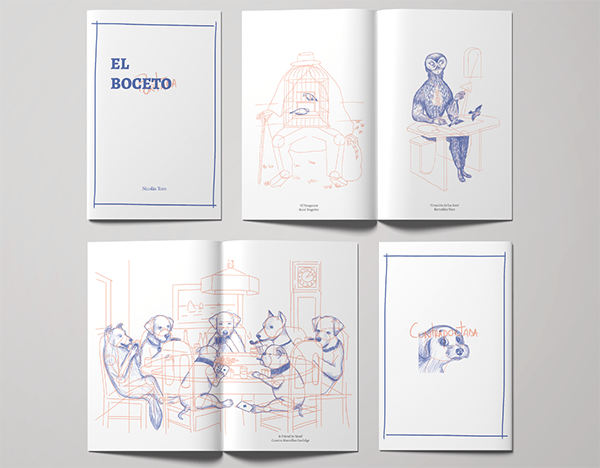

Nicolás Toro
Diseñador Gráfico
Me llamo Nicolás Toro, soy estudiante de diseño gráfico en la Universidad Diego Portales. Actualmente me encuentro cursando mi último año académico. Me encanta el diseño y el arte, especialmente cuando estas dos disciplinas se cruzan con la tecnología. Me apasiona el modelado 3D y el mundo del píxel.